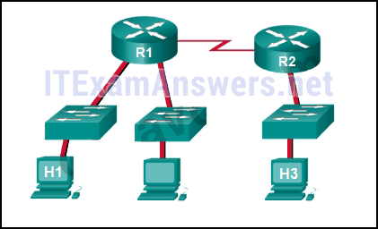
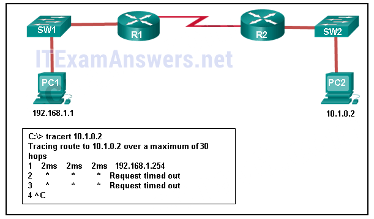
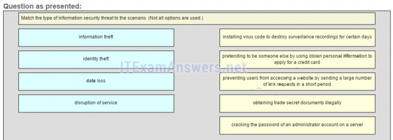
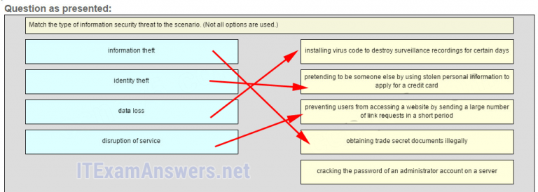

1.A un técnico de redes recién contratado se le asigna la tarea de ordenar nuevo hardware para una pequeña empresa con un gran pronóstico de crecimiento. ¿Con qué factor principal debería preocuparse el técnico al elegir los nuevos dispositivos?
- Dispositivos con soporte para modularidad *
- Dispositivos con un número fijo y tipo de interfaces.
- Dispositivos que tienen soporte para monitoreo de red.
- dispositivos redundantes
- @javi__super
Explique:
en una pequeña empresa con un gran pronóstico de crecimiento, el factor de influencia principal sería la capacidad de los dispositivos para admitir la modularidad. Los dispositivos con un tipo / número fijo de interfaces no soportarán el crecimiento. La redundancia es un factor importante, pero generalmente se encuentra en grandes empresas. El monitoreo de la red también es una consideración importante, pero no tan importante como la modularidad.
2.¿Qué consideración de diseño de red sería más importante para una gran empresa que para una pequeña empresa?
- redundancia *
- Enrutador de internet
- cortafuegos
- interruptor de baja densidad de puertos
- @javi__super
Explique:
las
pequeñas empresas de hoy en día sí necesitan acceso a Internet y usan un enrutador de Internet para satisfacer esta necesidad. Se requiere un interruptor para conectar los dos dispositivos host y cualquier teléfono IP o dispositivo de red, como una impresora o un escáner. El interruptor puede estar integrado en el enrutador. Se necesita un firewall para proteger los activos informáticos de la empresa. La redundancia normalmente no se encuentra en compañías muy pequeñas, pero las pequeñas empresas un poco más grandes pueden usar redundancia de densidad de puertos o tener proveedores / enlaces de Internet redundantes.
3.¿Qué dos tipos de tráfico requieren retrasos en la entrega sensible? (Escoge dos.)
- voz *
- correo electrónico
- web
- vídeo *
- @javi__super
Explique:
el
tráfico de voz y video tiene características sensibles al retardo y se le debe dar prioridad sobre otros tipos de tráfico, como el tráfico web, de correo electrónico y de transferencia de archivos.
4.Un administrador de red para una pequeña empresa está contemplando cómo escalar la red en los próximos tres años para adaptarse al crecimiento proyectado. ¿Qué tres tipos de información deben usarse para planificar el crecimiento de la red? (Elige tres.)
- Documentación de las topologías físicas y lógicas actuales *.
- Políticas y procedimientos de recursos humanos para todos los empleados de la empresa.
- Análisis del tráfico de red basado en protocolos, aplicaciones y servicios utilizados en la red *
- inventario de los dispositivos que se utilizan actualmente en la red *
- @javi__super
Explique:
varios elementos que son necesarios para escalar una red incluyen documentación de la topología física y lógica, una lista de dispositivos que se utilizan en la red y un análisis del tráfico en la red.
5.¿Qué dos afirmaciones describen cómo evaluar los patrones de flujo de tráfico y los tipos de tráfico de red utilizando un analizador de protocolo? (Escoge dos.)
- Capture el tráfico durante las horas pico de utilización para obtener una buena representación de los diferentes tipos de tráfico. *
- Capture el tráfico los fines de semana cuando la mayoría de los empleados no están trabajando.
- Solo capture el tráfico en las áreas de la red que reciben la mayor parte del tráfico, como el centro de datos.
- Realice la captura en diferentes segmentos de red. *
- @javi__super
Explique:
los
patrones de flujo de tráfico deben recopilarse durante las horas pico de utilización para obtener una buena representación de los diferentes tipos de tráfico. La captura también debe realizarse en diferentes segmentos de la red, ya que parte del tráfico será local a un segmento en particular.
6.Algunos enrutadores e interruptores en un armario de cableado funcionaron mal después de que fallara una unidad de aire acondicionado. ¿Qué tipo de amenaza describe esta situación?
- ambiental*
- configuración
- eléctrico
- mantenimiento
- @javi__super
Explique:
Las cuatro clases de amenazas son las siguientes:
Amenazas de hardware : daño físico a servidores, enrutadores, conmutadores, planta de cableado y estaciones de trabajo
Amenazas ambientales: temperaturas extremas (demasiado altas o bajas temperaturas) o humedad extremas (demasiado húmedas o muy secas)
Amenazas eléctricas: picos de voltaje, voltaje de suministro insuficiente (reducciones de voltaje), alimentación no condicionada (ruido) y pérdida total de energía.
7.¿Qué tipo de amenaza de red está destinada a evitar que los usuarios autorizados accedan a los recursos?
- DoS ataques *
- ataques de acceso
- ataques de reconocimiento
- explotación de confianza
- @javi__super
Explique:
los ataques de reconocimiento de red implican el descubrimiento y la asignación no autorizados de la red y los sistemas de red. Los ataques de acceso y la explotación de confianza implican la manipulación no autorizada de datos y el acceso a sistemas o privilegios de usuario. DoS, o ataques de denegación de servicio, están diseñados para evitar que usuarios y dispositivos legítimos accedan a los recursos de la red.
go
8.¿Qué dos acciones se pueden tomar para evitar un ataque de red exitoso en una cuenta de servidor de correo electrónico? (Escoge dos.)
- Nunca envíe la contraseña a través de la red en un texto claro. *
- Nunca uses contraseñas que necesiten la tecla Shift.
- Utilice servidores de diferentes proveedores.
- Limite la cantidad de intentos fallidos de iniciar sesión en el servidor. *
- @javi__super
Explique:
uno de los tipos más comunes de ataque de acceso utiliza un rastreador de paquetes para generar cuentas de usuario y contraseñas que se transmiten como texto sin cifrar. Los intentos repetidos de iniciar sesión en un servidor para obtener acceso no autorizado constituyen otro tipo de ataque de acceso. La limitación del número de intentos de inicio de sesión en el servidor y el uso de contraseñas cifradas ayudará a evitar inicios de sesión exitosos a través de estos tipos de ataques de acceso.
9.¿Qué función de firewall se usa para garantizar que los paquetes que entran en una red son respuestas legítimas iniciadas desde hosts internos?
- inspección de paquetes con estado *
- filtrado de aplicaciones
- Filtrado de URL
- filtrado de paquetes
- @javi__super
Explique:
la
inspección de paquetes con estado en un firewall comprueba que los paquetes entrantes son en realidad respuestas legítimas a solicitudes que se originan desde hosts dentro de la red. El filtrado de paquetes se puede usar para permitir o denegar el acceso a los recursos según la dirección IP o MAC. El filtrado de aplicaciones puede permitir o denegar el acceso según el número de puerto. El filtrado de URL se utiliza para permitir o denegar el acceso basado en URL o en palabras clave.
10.¿Cuál es el propósito de la función de autenticación de seguridad de red?
- exigir a los usuarios que demuestren quiénes son *
- para determinar a qué recursos puede acceder un usuario
- Para realizar un seguimiento de las acciones de un usuario.
- para proporcionar preguntas de desafío y respuesta
- @javi__super
Explique:
la
autenticación, la autorización y la contabilidad son servicios de red conocidos como AAA. La autenticación requiere que los usuarios prueben quiénes son. La autorización determina a qué recursos puede acceder el usuario. La contabilidad realiza un seguimiento de las acciones del usuario.
11.Un administrador de red está emitiendo el bloque de inicio de sesión para 180 intentos 2 dentro de 30 comandos en un enrutador. ¿Qué amenaza intenta evitar el administrador de la red?
- un usuario que está tratando de adivinar una contraseña para acceder al enrutador *
- Un gusano que intenta acceder a otra parte de la red.
- Un individuo no identificado que intenta acceder a la sala de equipos de red.
- Un dispositivo que está intentando inspeccionar el tráfico en un enlace.
- @javi__super
Explicación:
el
comando de bloqueo de inicio de sesión para 180 intentos 2 dentro de 30 hará que el dispositivo bloquee la autenticación luego de 2 intentos fallidos dentro de los 30 segundos para una duración de 180 segundos. Un dispositivo que inspecciona el tráfico en un enlace no tiene nada que ver con el enrutador. La configuración del enrutador no puede impedir el acceso no autorizado a la sala de equipos. Un gusano no intentaría acceder al enrutador para propagarse a otra parte de la red.
12.¿Qué dos pasos son necesarios antes de poder activar SSH en un enrutador Cisco? (Escoge dos.)
- Dele al enrutador un nombre de host y un nombre de dominio. *
- Cree un banner que se mostrará a los usuarios cuando se conecten.
- Generar un conjunto de claves secretas para ser utilizados para el cifrado y el descifrado. *
- Configure un servidor de autenticación para manejar las solicitudes de conexión entrantes.
- @javi__super
Explicar:
hay cuatro pasos para configurar SSH en un enrutador Cisco. Primero, establezca el nombre de host y el nombre de dominio. En segundo lugar, genere un conjunto de claves RSA que se utilizarán para cifrar y descifrar el tráfico. Tercero, cree las ID de usuario y las contraseñas de los usuarios que se conectarán. Por último, habilite SSH en las líneas vty en el enrutador. SSH no necesita configurarse en ninguna interfaz física, ni tampoco se debe usar un servidor de autenticación externo. Si bien es una buena idea configurar un banner para mostrar información legal para conectar a los usuarios, no es necesario habilitar SSH.
13.Consulte la presentación. La documentación de referencia para una pequeña empresa tenía estadísticas de tiempo de viaje de ida y vuelta de 36/97/132 entre los hosts H1 y H3. Hoy en día, el administrador de la red verificó la conectividad haciendo ping entre los hosts H1 y H3, lo que resultó en un viaje de ida y vuelta de 1458/2390/6066. ¿Qué le indica esto al administrador de la red?

- Algo está causando un retraso de tiempo entre las redes. *
- La conectividad entre H1 y H3 está bien.
- H3 no está conectado correctamente a la red.
- Algo está causando interferencia entre H1 y R1.
- @javi__super
Explicación:
las
estadísticas de tiempo de ida y vuelta de ping se muestran en milisegundos. Cuanto mayor sea el número, mayor será el retraso. Una línea de base es crítica en tiempos de rendimiento lento. Al examinar la documentación del rendimiento cuando la red funciona bien y compararlo con la información cuando hay un problema, un administrador de la red puede resolver los problemas más rápido.
14.¿Cuándo debe un administrador establecer una línea de base de red?
- a intervalos regulares durante un período de tiempo *
- Cuando el tráfico está en su punto máximo en la red.
- cuando hay una caída repentina en el tráfico
- En el punto de tráfico más bajo de la red.
- @javi__super
Explique:
Se puede establecer una línea de base de red efectiva al monitorear el tráfico a intervalos regulares. Esto le permite al administrador tomar nota cuando se produzca una desviación de la norma establecida en la red.
15.Consulte la presentación. Un administrador está tratando de solucionar problemas de conectividad entre PC1 y PC2 y utiliza el comando tracert desde PC1 para hacerlo. De acuerdo con la salida mostrada, ¿dónde debería el administrador comenzar a solucionar problemas?

- R1 *
- PC2
- SW2
- SW1
- @javi__super
Explicar:
Tracert se usa para rastrear la ruta que toma un paquete. La única respuesta exitosa fue desde el primer dispositivo a lo largo de la ruta en la misma LAN que el host de envío. El primer dispositivo es la puerta de enlace predeterminada en el enrutador R1. Por lo tanto, el administrador debe iniciar la solución de problemas en R1.
16.¿Qué afirmación es cierta acerca de CDP en un dispositivo Cisco?
- CDP se puede deshabilitar globalmente o en una interfaz específica. *
- El comando show cdp neighbor detail mostrará la dirección IP de un vecino solo si hay conectividad de Capa 3.
- Para deshabilitar CDP globalmente, se debe usar el comando no cdp enable en el modo de configuración de la interfaz.
- Debido a que se ejecuta en la capa de enlace de datos, el protocolo CDP solo se puede implementar en switches.
- @javi__super
17.Un administrador de red para una red de campus pequeño ha emitido el comando show ip interface brief en un conmutador. ¿Qué está verificando el administrador con este comando?
- el estado de las interfaces del switch y la dirección configurada en la interfaz vlan 1 *
- que un host específico en otra red puede ser alcanzado
- la ruta que se utiliza para llegar a un host específico en otra red
- La puerta de enlace predeterminada que utiliza el conmutador.
- @javi__super
Explicación:
el
comando show ip interface brief se usa para verificar el estado y la configuración de la dirección IP de las interfaces físicas y de conmutación de las interfaces virtuales (SVI).
18.Un técnico de red emite el comando arp -d * en una PC después de que se reconfigure el enrutador que está conectado a la LAN. ¿Cuál es el resultado después de que se emite este comando?
- La memoria caché ARP está borrada. *
- Se muestra el contenido actual de la caché ARP.
- Se muestra la información detallada de la caché ARP.
- El caché ARP está sincronizado con la interfaz del enrutador.
- @javi__super
Explique:
si se
emite el comando arp –d * en una PC, se borrará el contenido de la caché ARP. Esto es útil cuando un técnico de red desea asegurarse de que la memoria caché se llena con información actualizada.
19.Rellena el espacio en blanco.
- VoIP *define los protocolos y tecnologías que implementan la transmisión de datos de voz a través de una red IP
- @javi__super
20.Rellena el espacio en blanco. No utilice abreviaturas.
- El comando showfile systems *proporciona información sobre la cantidad de nvram y memoria flash libres con los permisos para leer o escribir datos.
- @javi__super
21.Rellena el espacio en blanco. No utilice abreviaturas.
- El comandoshow version *que se emite en un enrutador se usa para verificar el valor del registro de configuración del software.
- @javi__super
Explique:
El comando show version que se emite en un enrutador muestra el valor del registro de configuración, la versión de Cisco IOS que se está utilizando y la cantidad de memoria flash en el dispositivo, entre otra información.
22.¿Qué servicio define los protocolos y tecnologías que implementan la transmisión de paquetes de voz a través de una red IP?
- VoIP *
- NAT
- DHCP
- QoS
- @javi__super
23.¿Cuál es el propósito de usar SSH para conectarse a un enrutador?
- Permite una conexión remota segura a la interfaz de línea de comandos del enrutador. *
- Permite configurar un enrutador mediante una interfaz gráfica.
- Permite que el enrutador sea monitoreado a través de una aplicación de administración de red.
- Permite la transferencia segura de la imagen del software IOS desde una estación de trabajo o servidor no seguro.
- @javi__super
24.¿Qué información sobre un enrutador Cisco se puede verificar con el comando show version?
- el valor del registro de configuración *
- La distancia administrativa utilizada para llegar a las redes.
- El estado operativo de las interfaces seriales.
- La versión del protocolo de enrutamiento que está habilitada.
- @javi__super
25.Un técnico de red emite el comando C: \ tracert -6 www.cisco.com en una PC con Windows. ¿Cuál es el propósito de la opción de comando -6?
- Obliga a la traza a utilizar IPv6. *
- Limita la traza a solo 6 saltos.
- Establece un tiempo de espera de 6 milisegundos para cada repetición.
- Envía 6 sondas dentro de cada período de tiempo TTL.
- @javi__super
26.¿Qué comando se debe usar en un enrutador o conmutador de Cisco para permitir que los mensajes de registro se muestren en sesiones conectadas remotamente mediante Telnet o SSH?
- monitor de terminal *
- mostrar running-config
- registro síncrono
- depurar todo
- @javi__super
27.Haga coincidir el tipo de amenaza de seguridad de la información con el escenario. (No se utilizan todas las opciones).
- Pregunta

- Respuesta

- @javi__super
27.¿Cuál es el propósito de emitir los comandos cd nvram: luego dir en el modo de ejecución de privilegios de un enrutador?
- para listar el contenido de la NVRAM *
- para borrar el contenido de la NVRAM
- para dirigir todos los archivos nuevos a la NVRAM
- Copiar los directorios desde la NVRAM.
- @javi__super
28.¿Qué comando realizará una copia de seguridad de la configuración almacenada en la NVRAM en un servidor TFTP?
- copiar inicio-config tftp *
- copia running-config tftp
- copia tftp running-config
- copiar tftp startup-config
- @javi__super
29.¿Qué protocolo admite la entrega rápida de medios de transmisión?
- RTP *
- PoE
- TCP
- SNMP
- @javi__super
30.¿Cómo se debe capturar el flujo de tráfico para comprender mejor los patrones de tráfico en una red?
- durante los tiempos pico de utilización *
- durante tiempos de baja utilización
- cuando está en el segmento de red principal solamente
- cuando es de un subconjunto de usuarios
- @javi__super